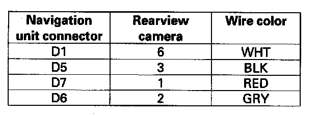
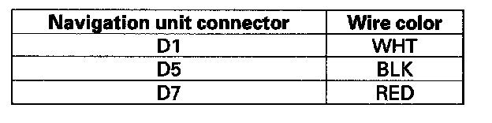
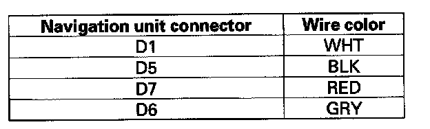

Rearview camera does not come on or work properly
Rearview camera does not come on or work properly1. Turn the ignition switch ON (II), and start the engine.
Does the Navigation screen come on and show an image when the vehicle is started?
YES - Go to step 2.
NO - Go to troubleshooting for "No picture is displayed".
2. Go into the diagnostic menu and use the "Navi System Link" test to check the connection between the navigation unit and the rearview camera.
Is the "R-camera" link on the screen?
YES - Go to step 3.
NO - Go to step 12.
3. Confirm the system connection.
Is the "R-camera" link red on the screen?
YES - Go to step 4.
NO - Go to "Car Status" and check the BACK-Reverse indication status.
4. Check the connections between navigation unit connector D (7P) and the rearview camera connector (6P).
Are the connections OK?
YES - Go to step 5.
NO - Reconnect the connectors.
5. Disconnect navigation unit connector D (7P) and rearview camera connector (6P).

6. Check for continuity between the navigation unit connector D (7P) and the rearview camera connector (6P) according to the table.
Is there continuity?
YES - Go to step 7.
NO - Repair open in the wire between navigation unit connector D (7P) and rearview camera connector (6P).

7. Check for continuity between navigation unit connector D (7P) and body ground according to the table. Then check for continuity between the navigation unit connector D (7P) terminal No. 6, rearview camera 6P connector terminal No. 2 and same terminals.
Is there continuity?
YES - Repair short in the wire between navigation unit and the rearview camera, or replace the appropriate shielded harness.
NO - Go to step 8.

8. Turn the ignition switch ON (II), and measure the voltage between navigation unit connector D (7P) and body ground according to the table.
Is there more than 0.5 V?
YES - Repair short to power in the wire between navigation unit and the rearview camera, or replace the appropriate shielded harness.
NO - Go to step 9.
9. Turn the ignition switch OFF.
10. Reconnect the rearview camera connector (6P).
11. Substitute and connect a known-good navigation unit and check the rearview camera image in reverse.
Is the rear view image OK?
YES - Replace the original navigation unit.
NO - Replace the rearview camera.
12. Press the "Return" in the upper light corner of the screen to return the main menu, then go to "Version".
13. Check the model code that is displayed.
Is the correct navigation unit model code displayed for this vehicle?
YES - Go to step 14.
NO - The wrong navigation unit is installed. Replace the navigation unit with the correct part.
14. Remove the DVD disc from the navigation unit and check the label color of the DVD disc.
Is the DVD disc label white (or possibly gray for Canada)?
YES - Reinsert the DVD disc, and go to step 4.
NO - Replace the DVD disc with the correct color. See the Obtaining a Navigation DVD in the "General Troubleshooting Information".